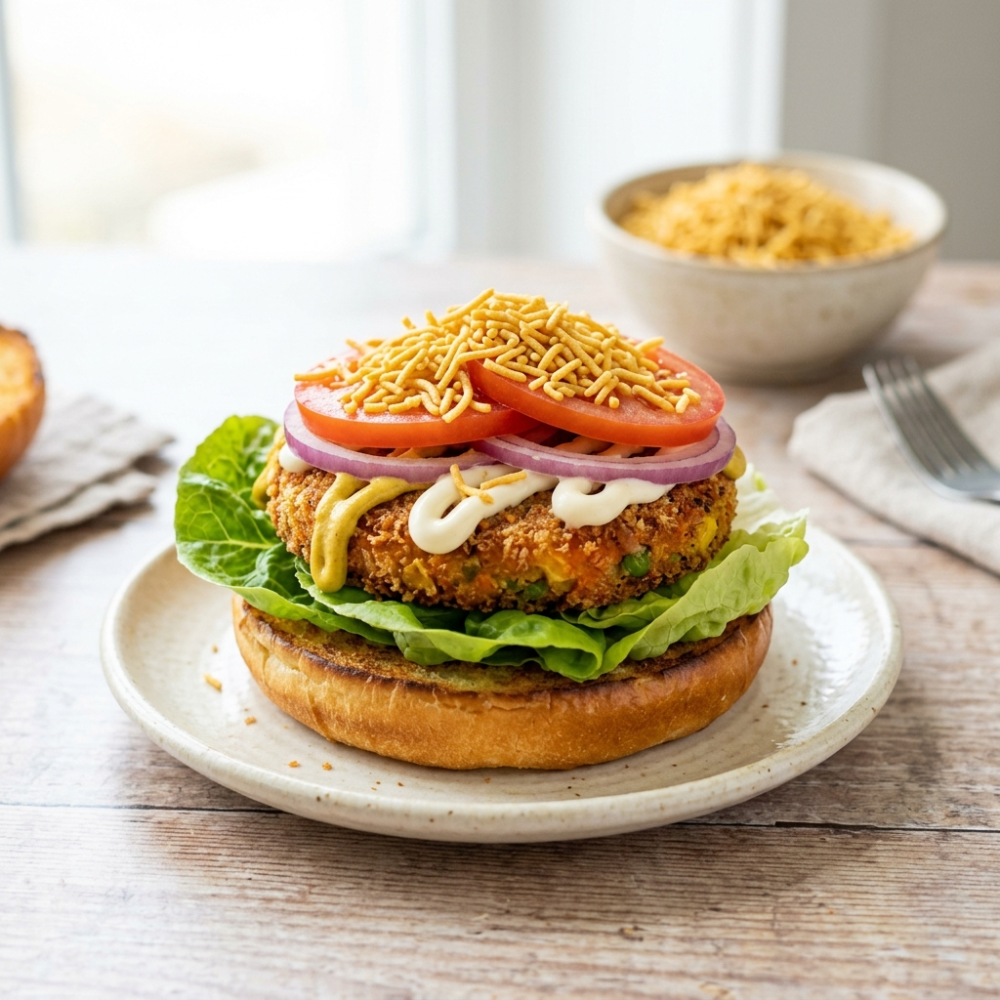

A fiery sautéed button mushroom stir-fry burger with spicy chili sauce and a creamy coleslaw layer.

Tip: Tap items to check them off as you prep!
Follow steps sequentially. Mark completed steps to keep track.
To begin making the Spicy Mushroom Veggie Burger Recipe, first wash, clean and slice the mushrooms.
Prepare the Creamy Coleslaw Recipe and keep it aside.In a small saucepan, heat the oil on medium flame, add the sliced onions and green chilli and sauté for a few seconds until tender.
Add the garlic and continue to cook.
Add the sliced mushrooms, salt, soy sauce and chilli sauce and sauté on high for about 2 to 3 minutes till the mushrooms start cooking but do not allow it to wilt too much.Turn off the heat and remove the mushroom stir fry from the pan.To assemble the burgersSlice the burger buns into two horizontally.Heat a griddle; apply butter to the cut sides of the buns and toast on the pan till light brown and slightly crisp.
Once done, remove from the pan.In a serving plate, place the toasted burger buns.
On the bottom half of the bun, place a leaf of lettuce, spoon some mushroom stir fry on top, layer the coleslaw on top of the mushrooms., then layer the slices of tomato and onion rings.If you need extra spice, drizzle some red chilli sauce over the coleslaw.Close with the other half of the bun and serve immediately with potato chips on the side.Serve the Spicy Mushroom Veggie Burger as a wholesome and quick weeknight dinner along with Zucchini Salad Recipe with Thai Hot Chili Dressing and a glass of Watermelon Cranberry Mocktail Recipe or serve it to kids as an after school snack.